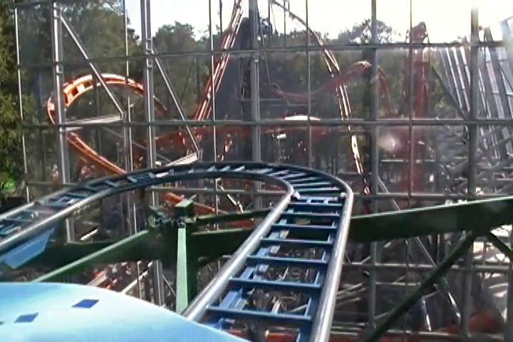

| |
Tyfonen Review

All right. We're here at Tivoli Frihedn, where we're going to review the Tyfonen. The park's spinning mouse. No, that's not fair. That implies that this ride spins. Sorry, but spoiler alert. This ride barely spins. It totally sucks. We get into our cars and away we go. We roll through a turn and then head up the lifthill. You head off the lifthill and into a turn. And of course, as we're rolling through the upper set of switch backs, theres no spinning. Typical. Usually these things don't spin until the second half, but for some reason, the upper switchbacks on this thing are even slower than usual. After the switchbacks, you head into a small drop and back up the small hill. This is fun. We then head into the biggest drop of the ride. We gain some speed as we dip to the ground. We then head into some double up thing which sadly, but not suprisingly, has no airtime. We then jolt around another turn and head into the second set of switchbacks. Normally, we start spinning here. But here, the spinning is bad. Its just so f*cking slow. Its not even funny. During these entire switchbacks, we make about two revolutions. 2 revolutions within about 5 switchbacks. Maybe 3 if I'm being generous and it was running better than I expected. That is truely pathetic Tivoli Friheden. We then go through the final little dip and bump. Its not fun since we're not spinning, but we do get some uncomfortable laterals. After that, we rise up and turn into the final brakes. This had to be the worst spinning mouse ever made. The only one worse than this was the one at Mt. Olympus that SOMEHOW managed to throw a guy out (Seriously. How the hell did that happen?). Now that that's gone, this has to take the award for worst spinning coaster ever. Even Pole Position is better than this. And I mean Pole Position on a bad day when it's not running. Don't even get me started when it's running good. It's' slow and boring. Worst excuse for a spinning mouse ever. Only ride it for the credit and then spend your time over at the SCAD Tower.
3/10
Location: Tivoli Friheden
Opened: 2006
Built by: Zamperla
Last Ridden: June 19, 2014
I have ridden this exact same ride at the following parks.
American Fairs
Coney Island
Mt. Olympus
Six Flags America
Six Flags Great America
Tyfonen Photos
Home
|